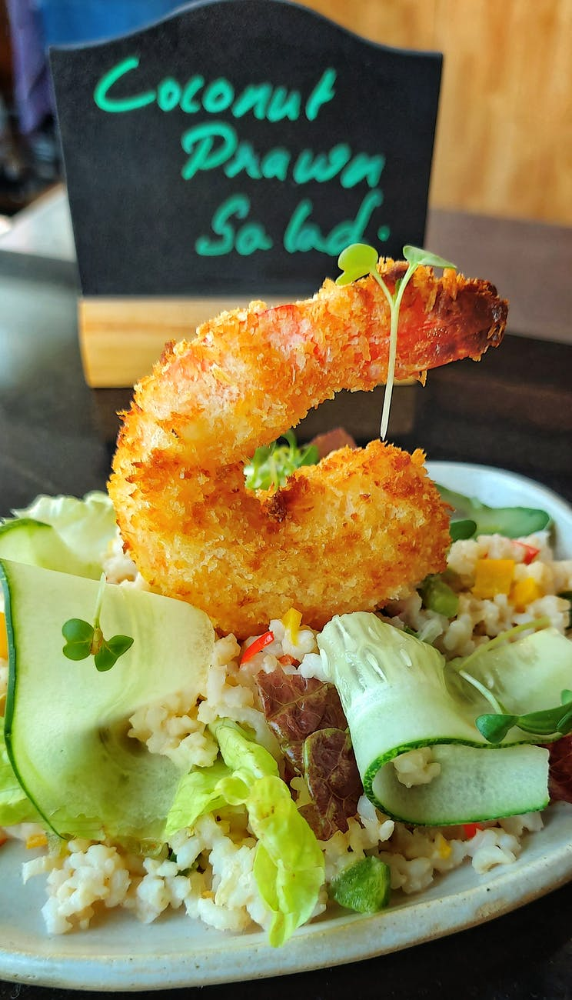
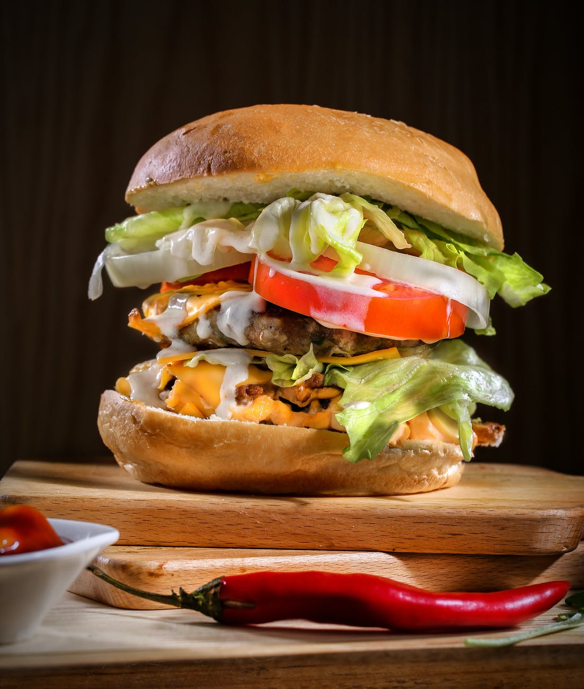
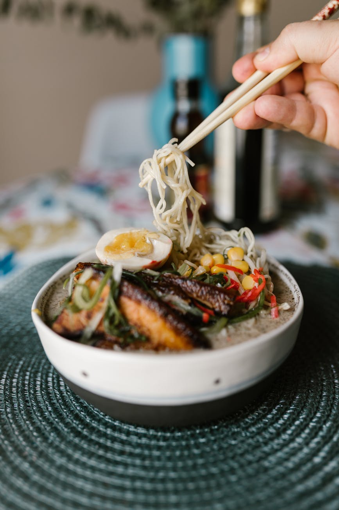

Receipes we prefer
"One of the benefits of home cooked food is that you have control over the nutritional value of the food you eat"
South Indian
Talking about the benefits of South Indian food, Singhal mentioned a few. She said, "These food items are mainly fermented which are healthy for gut microbiota. They are rich in probiotics; especially idli, dosa, uttapam, etc. Fermentation improves digestibility, enhances B vitamins and boosts the immune system."
North Indian
Both North Indian foods are very healthy. These foods are healthy because of the ingredients used in them. All ingredients and spices are rich in nutrients and the style of cooking them makes them not only healthy but also very delicious along with the mesmerizing aroma.
Chinese
Chinese foods are very low on sugar, refined carbs and high fat, which enabled our bodies to easily recognize when it is full. This enables people who eat Chinese food to eat more appropriate amount of food and not overstuff their bodies with unnecessary calories.
Receipes
“If you are a chef, no matter how good a chef you are, it's not good cooking for yourself; the joy is in cooking for others.
Chicken Grill
Mix buttermilk, garlic, paprika, salt, and pepper together in a large bowl; stir to combine. Massage rosemary sprigs to release fragrant oils. Put rosemary in a large resealable plastic bag; pour in buttermilk mixture. Add chicken parts to the bag, seal carefully, and place in refrigerator. Marinate, turning the bag occasionally, 4 hours to overnight. Transfer chicken to a plate; discard marinade. Grill chicken until no longer pink at the bone and the juices run clear, turning a few times, 20 to 30 minutes. An instant-read thermometer inserted near the bone should read 165 degrees F (74 degrees C).

Biriyani
Food for us comes from our relatives, whether they have wings or fins or roots. That is how we consider food. Food has a culture. It has a history. It has a story. It has relationships.” Food is the most important element of our life to survive. Place the chicken in the skillet. Reduce heat to medium-low, cover, and continue cooking 45 minutes, stirring occasionally, until chicken juices run clear. Bring the water Mix in the leaf, green cardamom, black cardamom, and cinnamon. Season with salt to taste. Cover, reduce heat to low, and simmer 20 minutes. In a separate pot, alternate the rice and chicken mixture in layers, topping with rice. Sprinkle with the food coloring, and mix to serve.

Prawn fry
Combine garlic, tapioca flour, fish sauce, soy sauce, sugar, and white pepper in a bowl; add prawns and toss to coat. Heat 2 tablespoons oil in a heavy skillet over high heat. Add 1/2 of the prawns in single layer; fry until golden brown and crispy, 1 to 2 minutes per side. Repeat with remaining oil and remaining prawns.
Pasta
Heat 4 cups water along with ½ teaspoon salt till it comes to a boil. Cook the pasta without any lid on medium to high flame.Strain the pasta. Meanwhile, when the pasta is cooking, you can prepare the masala base. First finely chop spring onions, tomatoes, capsicum and carrot. You can also use onions instead of spring onions. Do make sure to cut the carrots finely. Otherwise, they may take a long time to cook. Then add ¼ teaspoon garam masala powder.Serve Indian style masala pasta hot or warm garnished with some coriander leaves or some grated cheddar cheese or vegetarian parmesan cheese.

Burger
Preheat an outdoor grill for medium high heat and lightly oil grate. In a large bowl, combine the beef, onion soup mix, egg, hot sauce and oats. Shape into 6 patties. Grill patties over medium high heat for 10 to 20 minutes, or to desired doneness. Rub fillets with olive oil, and season with garlic salt and black pepper. Place each fillet on a large sheet of aluminum foil. Top with jalapeno slices, and squeeze the juice from the ends of the lemons over the fish. Arrange lemon slices on top of fillets. Carefully seal all edges of the foil to form enclosed packets. Place packets on baking sheet. Bake in preheated oven for 15 to 20 minutes, depending on the size of fish. Fish is done when it flakes easily with a fork.

Pizza
Preheat the oven to 475 degrees C (220 degrees C). Roll out pizza crust and place on a pizza pan or baking sheet. Spread a thin layer of hummus over the crust. Arrange sliced peppers and broccoli over the hummus, and top with shredded cheese. Bake in the preheated oven until the crust is golden brown and cheese is melted in the center, 10 to 15 minutes. Slice and serve.

Dumbling
Place bacon in a large, deep skillet. Cook over medium high heat until evenly brown. Drain, reserving drippings, crumble and set aside. In a large bowl sift together flour, salt and baking powder. Gently stir in parsley and pepper. In a 1 cup measuring cup, beat eggs and add enough milk to reach the 1/2 cup level. Stir the egg mixture and the bacon drippings into the flour; stir with a fork until well blended. Add more milk if dough is too dry. Stir in the crumbled bacon; mix well. In a 2 saucepan broth over medium heat. dough spoonfuls into simmering broth. Cover and cook about 12 minutes, or until done.

Ramen
Combine water, mushrooms, 1/2 the green onions, carrot, onion, soy sauce, garlic, sriracha sauce, sesame oil, rice wine vinegar, white pepper, black pepper, and flavor packets from ramen in a large pot. Bring to a boil. Add noodles and cook, stirring occasionally, until noodles are tender yet firm to the bite, about 5 minutes. Reduce heat to a simmer and cook until cook vegetables are tender, about 10 minutes. Serve topped with remaining green onions.

Salad
Mash green onion and ginger in a bowl with water. Mix in pork, 2 tablespoons rice wine, soy sauce, 2 teaspoons salt, sesame oil, and white pepper. Separate and place wonton wrappers onto your work surface. Spoon about 1 tablespoon of the pork-shrimp filling onto the center of each wrapper. Use your finger or a pastry brush to lightly moisten edges of wonton wrappers with water. Fold one corner of the wrapper over the filling onto the opposite corner to form a triangle. Press edges together to seal. Bring the chicken stock to a rolling boil. Add wontons and cook until they float to the top, about 5 minutes.